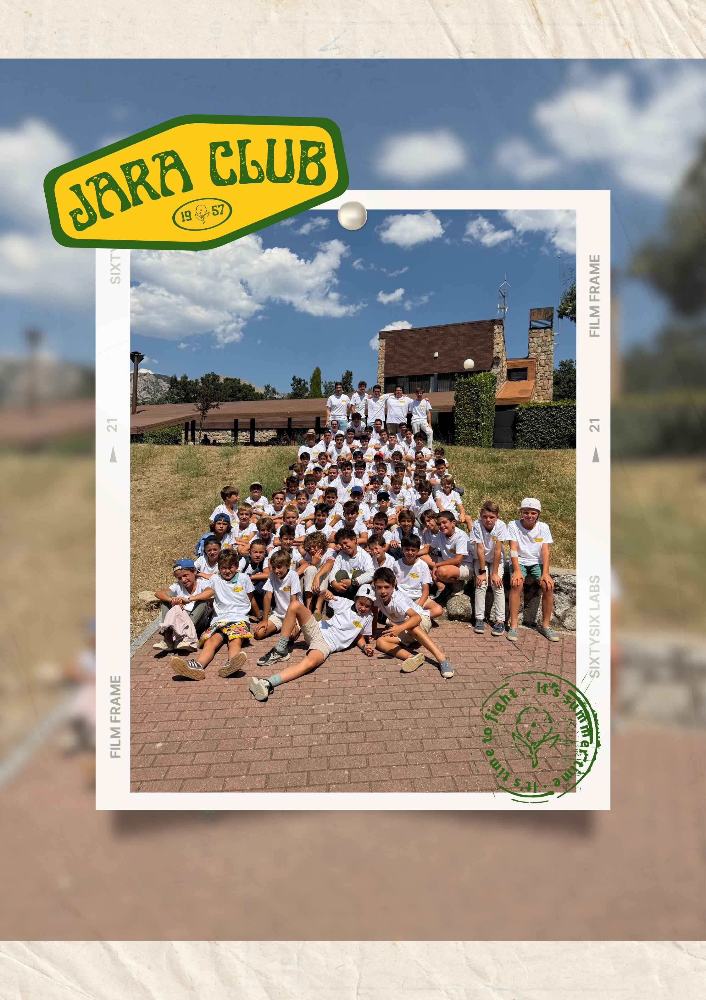

🌱
Crecen como personas
Generosidad, alegría, responsabilidad, compañerismo y espíritu de servicio, aprendidos jugando y haciendo cosas juntos. Siempre respetando lo que cada familia quiere transmitir.
El Jara es un espacio de tiempo libre sano y con vida real: deporte, cultura, excursiones y estudio, acompañados por un preceptor que está para lo que el chico y su familia necesiten.
Buscamos lo mismo para nuestros hijos: que sean felices, tengan buenos amigos y aprovechen bien estos años.
Generosidad, alegría, responsabilidad, compañerismo y espíritu de servicio, aprendidos jugando y haciendo cosas juntos. Siempre respetando lo que cada familia quiere transmitir.
Los chicos conocen a Jesús y descubren la fe como algo cercano y alegre, que se propone con libertad y se vive en lo cotidiano.
Conocen a chicos de otros cursos y de otros colegios, y nacen amistades que duran años.
Trabajan en equipo, asumen responsabilidades y encuentran capacidades que no sabían que tenían.
No sustituye a la familia ni al colegio: suma. Un ambiente sano y coherente con lo que muchas familias queremos para ellos.
Actividades para todos los gustos, este curso con cocina, cine, maquetas y música.
Un tiempo libre para jugar, moverse, crear y hablar cara a cara.
Una asociación juvenil con actividades de tiempo libre los viernes: deporte, cultura, excursiones, juegos y proyectos, en un ambiente sano y con adultos pendientes de los chicos.
El Jara es un apoyo para que los hijos crezcan en su tiempo libre, en coherencia con lo que cada familia quiere para ellos.
Un ambiente para conocer a Jesús y vivir la fe con naturalidad, respetando lo que cada familia quiere transmitir.
Con chicos de otros cursos y de otros colegios, no solo con sus compañeros de clase.
Los chicos no están solo en actividades: tienen a alguien que los conoce, los escucha y está en contacto con la familia.
Dentro de unos años, cuando miremos atrás, nos alegraremos de haberles dado también esta oportunidad.
